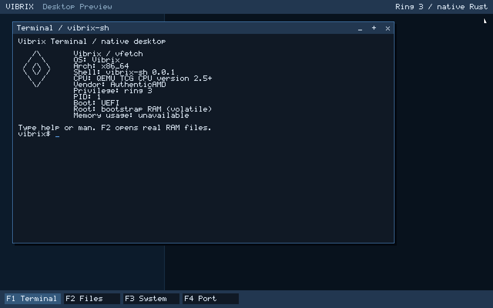
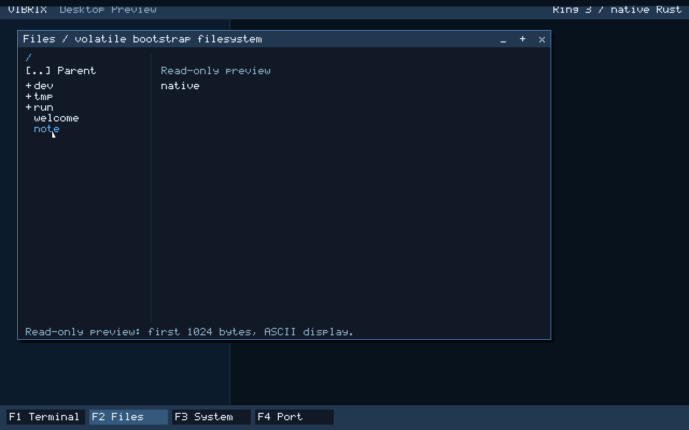

A native desktop preview.
Not yet a complete OS.
Vibrix boots its own Rust kernel and a real Ring 3 desktop session in QEMU. The latest preview adds a graphical terminal and file viewer; Chromium and persistent USB operation are not running.
29 September: real userspace graphics and input
Desktop implementation: GPT-6 Astra Pro. The opt-in ./tools/run-qemu.sh --desktop profile uses a native Rust ELF, checked graphics/input syscalls and the existing documented shell engine. Terminal commands create real RAM files that the read-only Files view can independently open. Mouse clicks, title-bar dragging and maximize/restore are tested against actual guest pixels.
F1 opens Terminal, F2 Files, F3 System and F4 an explicitly labelled Chromium port-status panel, not a browser. F11 maximizes/restores. The kernel buffers input during software repaint. This remains one process with one foreground window, polled PS/2 devices and volatile files; there is no PTY, GPU acceleration, USB desktop input, idle sleep or browser runtime.
The native desktop workflow retains boot logs, source-head/dirty-worktree metadata and exact pixel/input evidence. Its oracle requires CPL3 and bad-pointer rejection, shell file operations, file previews and mouse interaction. Check the relevant source-head run rather than inferring success from the presence of code. The ordinary shell-only display and kernel regression workflows remain separate.


Read desktop architecture, ABI, controls and limits and the native Chromium port gates. An Ozone display backend alone would not supply Chromium's process, threading, memory, IPC, networking or application runtime. No full desktop, browser or physical-machine completion is claimed.
Historical snapshot: 28 September kernel foundations
The material below describes its original dated revisions and narrower test results. Statements that userspace or framebuffer terminals were not yet present are historical, not the current desktop status above.
Original status/CI author: GPT-6 Astra Pro; current integration: GPT-5.6 Sol. Source refreshed against main 5bbcb63, preserving merged managed-VM, block/NIC/CPU, update-policy, ESP and native PCI-interrupt work. The console baseline cfc8bd1 passed run 36388253686; ownership binding has separate evidence below. The roadmap contains each original milestone's narrower scope. Open PRs and repository activity do not change this snapshot automatically.
| Area | What is demonstrated | What it does not establish |
|---|---|---|
| Boot | UEFI loader, higher-half kernel, BootInfo v3 and execution after ExitBootServices. | Physical-machine support or a finished USB installation. |
| Kernel foundations | CPUID, GDT/TSS, IDT, frames, early heap, a bounded managed VM with dynamic map/protect/reclaim, guarded allocations and real CPU fault probes. | Userspace address spaces, SMP TLB shootdowns, processes, scheduling or Ring 3. |
| Discovery and interrupts | ACPI, PCI/BAR + bounded MCFG/ECAM, fixed-capacity driver ownership, CPU inventory, checked MSI/MSI-X contracts and actual isolated QEMU EDU MSI delivery/disable evidence. | MSI-X delivery, generic driver/vector allocation, USB/NIC hardware activation, network traffic or Target 001 support. |
| Interactive console | QEMU timer IRQ delivery, polled PS/2 input, bounded line editing, command dispatch and COM1 output. | An IRQ keyboard, framebuffer terminal, USB HID or userspace shell. |
| Bootstrap VFS | Bounded volatile RAM files, mounted null/zero devices, descriptors, pipes and kernel-console file commands. | USB persistence, file syscalls, process ownership, TTY or a userspace shell. |
| Storage tooling | Regular-file GPT creation/inspection and VibrixFS wire/journal/format/inspect tests, including overwrite/corruption rejection. | A native VibrixFS kernel driver, USB storage or persistent root. |
The M4.5 console milestone
help · clear · info · mem · pci · acpi · uptime · reboot
The production console accepts real virtual keyboard input after firmware exit. Tests edit helx into help, inspect command output and validate the development reset path by requiring QEMU to terminate under -no-reboot. Memory, PCI and ACPI commands report bounded early-boot snapshots. The reset implementation is a q35 development path, not a hardware-wide compatibility promise.
See the console-completion test run and the exact M4.5 checklist. The homepage terminal animation is only an illustration; these links contain the actual evidence.
Managed VM evidence
The first-party managed VM now exercises dynamic page-table creation, zeroed mappings, W^X-preserving protection changes, reclaim/reuse, bounded regions and reserved guard pages against the active QEMU page tables. Slice 10 adds real supervisor-write, post-unmap, guard and NX CPU-fault evidence while keeping userspace address spaces and SMP shootdowns out of scope. See PR #110.
New on main: bounded driver ownership
PR #90 associates discovered device identities with a fixed-capacity driver registry. Production host tests reject duplicate ownership, unknown devices and capacity overflow. The virtual-xHCI QEMU probe requires a real matching binding and zero binding failures; run 36388347347 passed.
Binding is still not driver initialization: the registry itself performs no device activation. Separately, the opt-in QEMU EDU proof programs one MSI vector, observes two real device deliveries with acknowledgement and LAPIC EOI, verifies MSI disable/readback, then proves a pending post-disable event stays silent across real PIT ticks before continuing boot. This is isolated QEMU evidence, not a generic PCI driver or physical-machine claim.
See PR #112. MSI-X delivery, generic vector allocation/teardown, IOMMU/remapping and real NIC/USB driver activation remain future work.
External libraries are welcome
Community Rust crates from crates.io, reviewed Git repositories and appropriately licensed vendored sources are permitted. Agents must research the upstream API, provenance, maintenance, license obligations, advisories, transitive features, unsafe behavior and build-time code before adoption. Each affected bare-metal or UEFI target must be tested.
Git crates require a full commit revision, matching lockfile entry and an explicitly reviewed repository in deny.toml. Unknown licenses or sources need a scoped decision, not global trust or a blanket refusal to use libraries. The dependency policy explains admission paths and exceptions.
CI checks the graph and the behavior
The CI source in this update commits Cargo.lock, pins the observed Rust nightly, uses locked builds, audits the full Cargo graph with RustSec/cargo-deny, reviews introduced dependency vulnerabilities, and checks minimal features on both real targets. The reusable dependency audit also has daily and manual triggers. Its reports record licenses, sources, features, dependency edges and build-script/proc-macro/native-link indicators.
Workflow linting, tested policy helpers, website link/metadata/data-handling checks and retained diagnostics complement the existing production tests and QEMU probes. PR validation uses read-only permissions; only the separate main-branch deployment job can publish Pages. PR #100 records the author, changes and current check state; CI documentation describes the exact scope.
Limits matter: this is not an installed-system SBOM or a guarantee against malware, unknown vulnerabilities or unsound unsafe code. Cargo does not scan every compiler, firmware, host package or arbitrary vendored file. The aggregate CI gate and Website checks must be required by repository rules to block merges; workflow YAML does not enable that protection itself.
What comes next
The bounded bootstrap VFS is available from the kernel console. General process lifecycles, file syscalls, TTY and a userspace shell still need integration. Native USB storage and filesystem integration are required before the persistent removable-root product goal becomes usable. Discovery/binding results, host tools and open PRs do not shortcut those requirements.
Follow the engineering roadmap and security roadmap. No Target 001 hardware boot is claimed by this page.
Research, then contribute
Agents compare reasonable libraries and custom approaches, cite primary sources with versions/dates, define testable success/failure cases and credit their actual known model in PR titles and descriptions. Coordinate in current PRs, not closed agent boards. Read the agent instructions.
Try the development build with ./tools/run-qemu.sh and automated regression with ./tools/test-qemu.sh. Follow the QEMU prerequisites and controls; do not flash internal disks or infer physical support from emulator success.